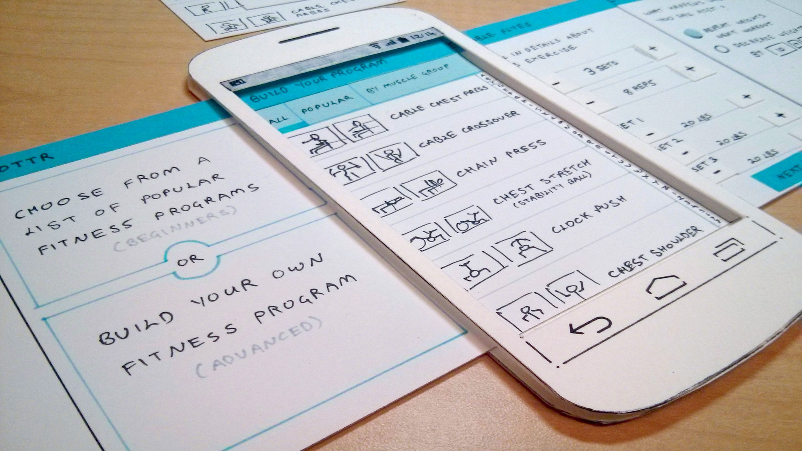
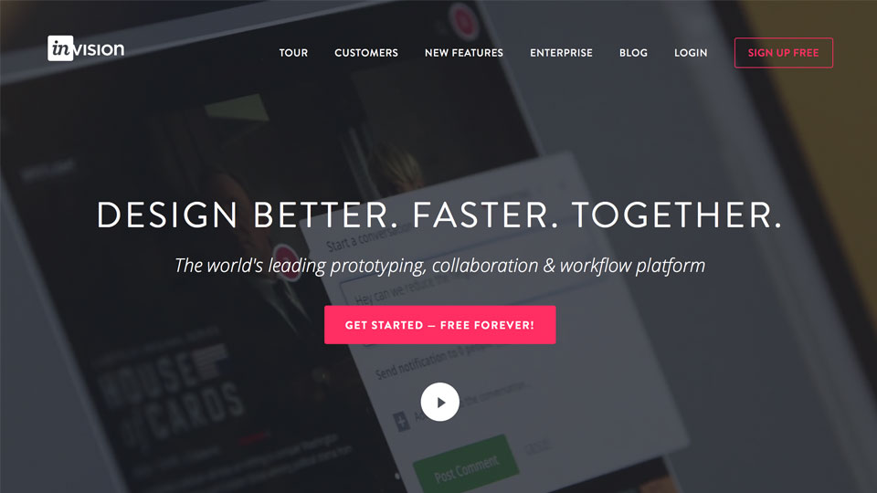
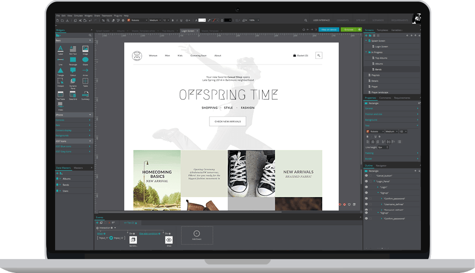
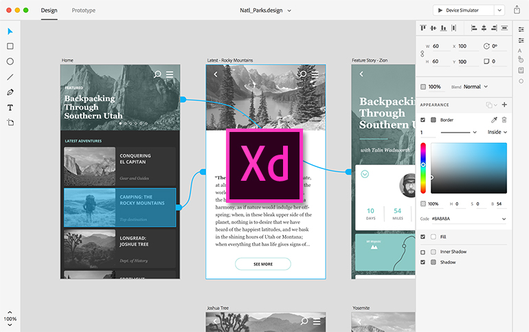
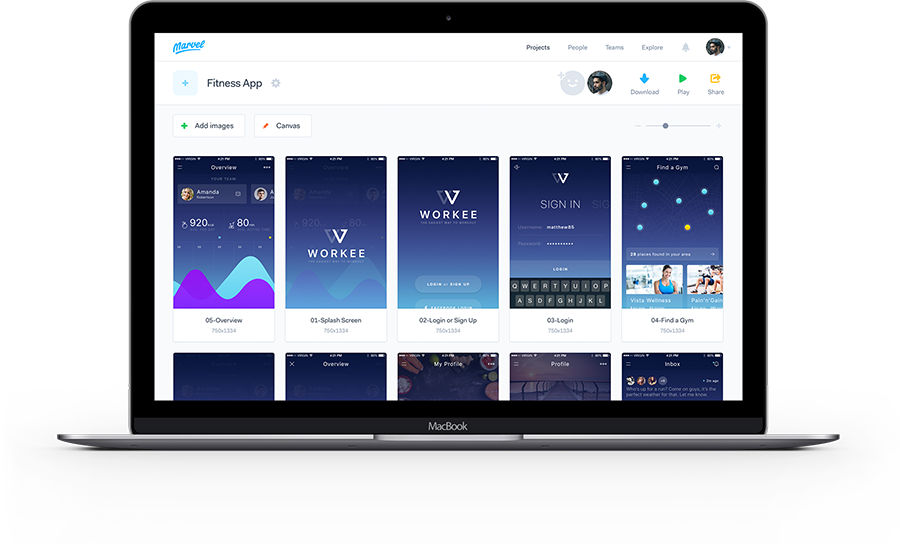

The Best Prototyping Tools
Article By Aditya Marathe - January 10 2018

As the world is modern now , nobody uses the method of prototyping as shown in the image above, instead every developer uses "Prototyping Tools" which is very easy to use and maintain. Before we move on for prototyping tools , lets get the concept of prototying :
What is Prototyping?
It refers to an initial stage of your software or website .It is an integral part of Design Thinking and User Experience design in general because it allows us to test our ideas quickly and improve on them in an equally timely fashion.
So why should we do prototyping?, Lets say you are working as a freelancer and your client tells you to develop website/app for him , he will explain you the idea of website/app and then you start to develop it and after finishing the actual website/app you show it to your client but if he doesn't like the UI of website/app , it will be a headache for you as a developer. So to avoid such situation, prototyping is the solution. Just make a prototype of the website/app confirm from the client wheather he likes the UI or not then start the actual development of website/app.
Now,here are some prototyping tools you can check out :
1. Invision

It is a very powerful prototyping tool . You can upload your design files and add animations,gestures
and transition to transform your static screens into clickable, interactive prototypes.It also provides
feedback system to users which is very convinient according to me.It has real time design collaboration and tours.
Great tool which runs on web , means no need of installation on your device.You can make prototypes for Android, ios and Websites.
Cost
- Single Project – Free
- 3 Projects (Starter) – $15/month
- Unlimited Projects (Professional) – $25/month
- Unlimited Projects, 5 Users (Team) – $100/month
2. JustInMind

Another powerful tool , JustInMInd is know for its high-quality work . JustInMind can be downloaded on the computer for offline work which is huge advantage.
UI is rich and takes time to get used to .You can make prototypes for Android , Ios and websites.
However,Its not “free prototyping app”… The free basic version lacks all the features that make this worthwhile.
Cost
3. Adobe XD

One of the newest member of Adobe family (launched in beta in 2016) .It really meet the needs of todays UI/UX designers with his performance . Being the newest in this field it is one of the most used prototype tools.
Adobe XD’s “Repeat Grid” feature is worth mentioning, as it’s a favorite among users for speeding up their work. Duplicating elements runs a lot smoother than copying-and-pasting.
Check pricing here
4. Marvel

The strength of this tool is simplicity .It is the tool for the people who have little or no knowledge of prototyping .Whether you want to present your prototypes on desktop, mobile or the Apple Watch you can do it .Add gestures and transitions to your prototypes.Make prototypes for Iphone , Ipad , Android and Desktop
Cost
- 1 User | 2 Projects : $0/month
- 1 User | Unlimited Projects : $12/month
- # User | unlimited Projects : $42/month